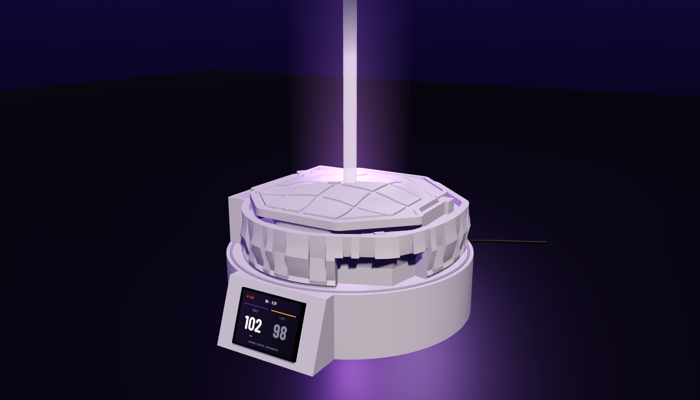
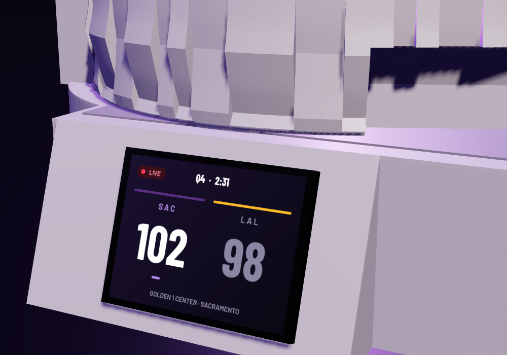

Build guide: printing, flashing, assembly and setup. Plan on two evenings: one for printing and flashing, one for assembly. No soldering.
Draft v0.2 · not yet built on hardware · read each part before starting itThe build has five parts. Each part starts with what you need on the table and ends with a check so you know it worked before moving on. Times assume the prints are done.
Letters are used throughout the guide. Printed parts are A–G and L; bought parts are H–K (see docs/bom.md for links).
plinth.stlplinth_lid.stlplinth_top.stl · arena recess + wire slotbeam_tube.stlbeam_spine.stlbeam_socket.stlprintables.com/model/338758 and sign in (a free account is required to download).models/printables/.The plinth's recess is cut to the arena's exact footprint, so it needs the outline from the base file. A script reads it for you.
base_220.stl and lid_220_nohole.stl inside models/printables/.python3 tools/measure_arena.py. It prints the footprint size, the floor thickness, where the wire channel exits, and writes models/arena_outline.scad.python3 tools/measure_arena.py # footprint 205.8 x 208.2 mm ... floor ~1.5 mm ... octagonal well 165 x 164 mm ... wire exit: opening in the flat wall ... lid seats at 49.5 mm # wrote models/arena_outline.scad
cd models && make. Seven STLs appear in models/exports/: the plinth ring, top plate, bottom lid and console test part, plus the tube, spine and socket.cd ~/dev/personal/prints/sacramento_kings_beam/models make # writes exports/plinth.stl (ring), plinth_top.stl, plinth_lid.stl, plinth_test.stl, beam_tube.stl, beam_spine.stl, beam_socket.stl
screen_ofs_x in models/plinth.scad (positive = toward the end away from the USB port) and run make again.exports/plinth_test.stl. It's the console cut from the front of the plinth. Print it standing as exported (open side down), silver PLA, 0.2 mm, default walls, no supports.pocket_clear in plinth.scad by 0.2. If the picture is off to one side, change screen_ofs_x by the amount it's off (in mm; positive moves the window right). Re-run make and reprint only the test slice.| Part | File | Filament | Orientation | Settings | Time |
|---|---|---|---|---|---|
| A · Arena base | Printables 220 base | silver | as downloaded, floor down | 0.2 mm · 3 walls · 15 % · no supports | ~9 h |
| B · Arena lid | Printables no-hole lid + your cut | silver | flat side down | 0.15 mm for the roof detail | ~2 h |
| C · Plinth ring + console | plinth.stl | silver | standing, as exported (open bottom on the plate) | 0.2 mm · 3 walls · no supports | ~4 h |
| L · Plinth top plate | plinth_top.stl | silver | flat, recess side up | 0.2 mm · 15 % gyroid | ~1 h 30 |
| D · Bottom lid | plinth_lid.stl | silver | flat side down | 0.2 mm | ~40 min |
| E · Beam tube | beam_tube.stl | white | foot down | Spiral vase on · 0.4 nozzle · 0 bottom layers · 5 mm brim · 0.2 mm | ~1 h |
| F · Spine, G · Socket | beam_spine.stl, beam_socket.stl | white | spine flat, socket open side up | 0.2 mm | ~20 min |
Do this before assembly, while the board is easy to plug in. You only ever do it once; WiFi is set up from your phone later.
python3 -m pip install --user platformio export PATH="$HOME/Library/Python/3.9/bin:$PATH" # use the path pip printed (3.12 on newer Macs); add to ~/.zshrc so it sticks
cd ~/dev/personal/prints/sacramento_kings_beam/firmware pio run -e cyd_demo -t upload
SUCCESS. The board restarts by itself.pio run -e cyd -t upload
pio device monitor -b 115200 shows the log: WiFi, each ESPN fetch, and the beam decisions.BEAM_NUM_LEDS in firmware/src/config.h to match.It's much easier to fix a wiring mistake now than after the glue.
Three wires, three connectors. This is the same for the bench test (step 13) and the final assembly (step 18).
| Board pigtail | Strip wire | Carries | Connector |
|---|---|---|---|
| VIN (P1) | Red | 5 V power | J1 |
| GND (P1) | White (or black) | Ground | J2 |
| IO22 (CN1) | Green | Data | J3 |
The screen lives in a small sloped console on the front of the plinth. Its face leans back 20° so the picture points up at you at a desk, and because the console stands in front of the walls, nothing above it blocks the view. Inside the console is a pocket, open toward the bottom and wide enough for the board with its USB plug attached: board and plug slide up into it together, the window's lip stops the glass, and a tongue on the bottom lid closes the opening under the board. No screws.
Same three joints as the bench test in step 13 (wiring reference on page 8), now with the strip inside the arena and the board inside the plinth.
| Board pigtail | Strip wire | Carries | Connector |
|---|---|---|---|
| VIN (P1) | Red | 5 V power | J1 |
| GND (P1) | White (or black) | Ground | J2 |
| IO22 (CN1) | Green | Data | J3 |

192.168.4.1 in the address bar.Dust with a dry cloth. Keep out of direct sun and off radiators: PLA softens around 55 °C and the tube is thin. The lid lifts off to reach the beam; the bottom lid pulls off (finger hole) to reach the board. Unplug before opening.
| Symptom | Try |
|---|---|
| Screen stays dark | Use the 2 A adapter, not a laptop. Try the board's other USB port if it has two. Check the cable is a data cable if you're flashing. |
| Colours inverted or milky | You have the other board variant. In firmware/platformio.ini, comment out ILI9341_2_DRIVER and enable the ST7789_DRIVER + TFT_INVERSION_ON lines noted there; reflash. |
| Picture upside down | In firmware/src/ui.cpp change LV_DISPLAY_ROTATION_90 to _270; reflash. |
| Screen off-centre in the window | Adjust screen_ofs_x / screen_ofs_y in models/plinth.scad by the offset in mm, make, reprint the console test part. |
| Beam never lights, even on tap | Unplug. Check red → VIN (not 3V3), green → IO22 (not IO27), white → GND. Check the strip's arrows point away from the wired end. Check each lever nut grips (tug test). |
| Only LED 1 lights / random colours | Data signal is marginal. Shorten the green lead to the minimum, or add the 74AHCT125 level shifter between IO22 and the strip's green wire. |
| Beam dim or flickers with the screen | Weak power. Use a 2 A adapter and a short USB cable. Step brightness down (hold 1 s) if it's a weak charger you can't change. |
| Beam leans | Socket not flat or off-centre: lift the lid, reheat the glue, reseat (step 14). |
| OFFLINE badge won't clear | ESPN unreachable from your network. It retries every minute. Check other devices have internet; reboot the board. If it persists for days, ESPN may have changed its edge rules; check python3 tools/espn_probe.py on your Mac. |
| Countdown wrong by hours | Clock not synced yet; wait a minute after connecting. If it stays wrong, your router blocks NTP (UDP 123). |
| Taps ignored | Press firmly with a fingertip in the middle of the screen; it's a resistive panel. Lower Z_THRESHOLD in firmware/src/touch.cpp if it never registers. |
| Setup network never appears | Power-cycle the board. It only opens the portal when it can't connect; if it already knows a WiFi and that WiFi is up, there's nothing to set up. |
Low-voltage USB only; never connect to anything but a 5 V USB adapter. Indoor use. Unplug before opening the plinth or touching the wiring. The beam tube is thin-walled and not a toy. Printed PLA parts are not food-safe and should be kept away from heat.
Everything referenced here lives in the project repo: firmware/ (build and flash), models/ (OpenSCAD and STL exports), docs/bom.md (parts with links), tools/ (helper scripts).